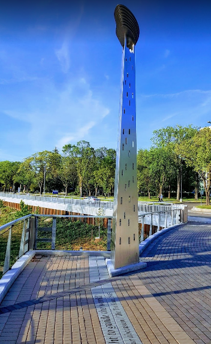
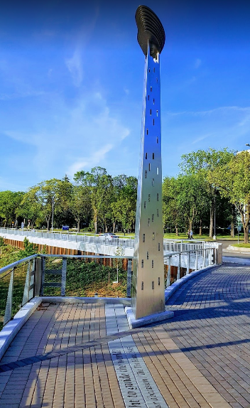
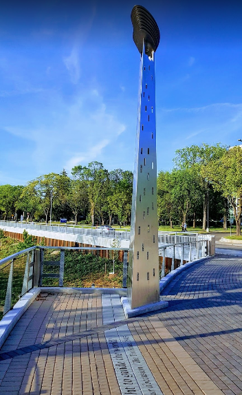

Манитоба е една от десетте провинции на Канада. Манитоба е с население от 1 278 365 жители (2016) и обща площ от 647 797 км². Уинипег е столицата, както и най-големият град на Манитоба. Манитоба се присъединява към Конфедерацията през 1870 г., а нейният главен град Уинипег става столица през 1873 г. Брайън Палистър е настоящият премиер на провинцията. Той ръководи мажоритарно прогресивно консервативно правителство

Манитоба , провинция Канада , една от прерийните провинции , разположена по средата между Атлантическия и Тихия океан. Провинцията е ограничена на север от територията на Нунавут , на североизток от залива Хъдсън , на изток от Онтарио , на юг от американските щати Минесота и Северна Дакота и на запад от Саскачеван . Манитоба съдържа повече от 100 000 езера, включително езерото Уинипег , едно от най-големите вътрешни водоеми във вътрешността на страната. Повече от две пети от площта на провинцията е залесена.Уинипег , най-големият град в Манитоба, е столицата. Името на провинцията идва от индийска дума, означаваща „богът, който говори“.